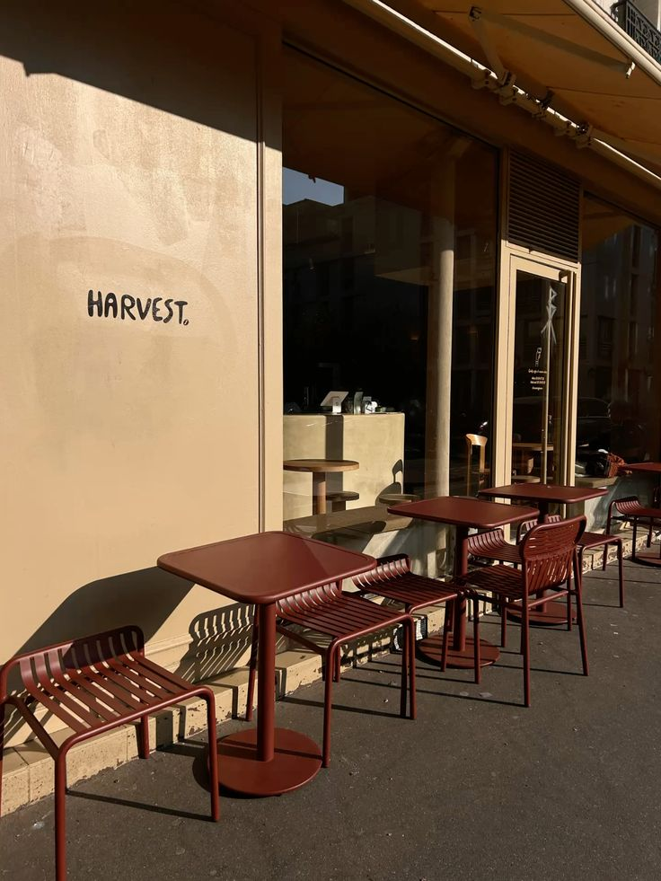
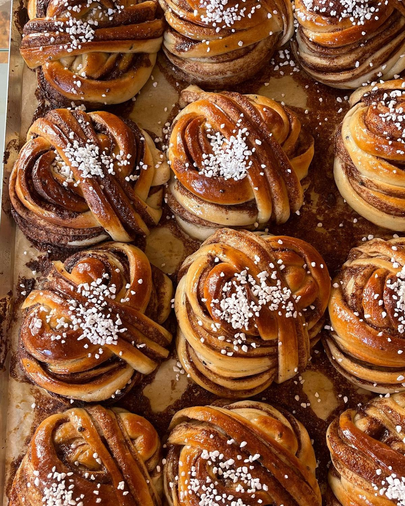
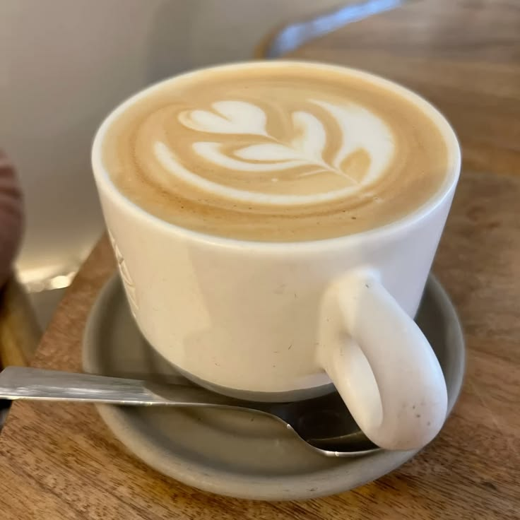
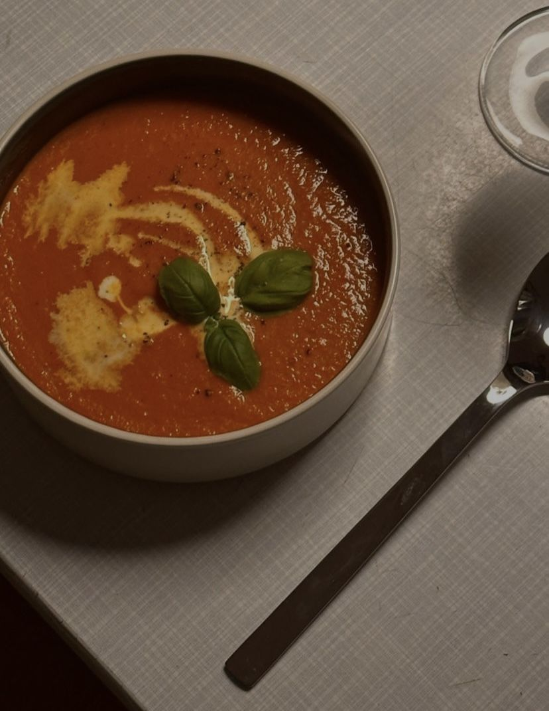

Nybakat varje morgon, kaffe från ett litet rosteri i Järna och ett hörn som alltid är ledigt för dig. Välkommen in.


Kanelbulle
Kardemumma i degen, pärlsocker på toppen. Bakad kl 06.30.
38 kr

Latte
Dubbel espresso och skummad mjölk. Havremjölk utan extra kostnad.
49 kr

Dagens soppa
Just nu: rostad tomatsoppa med surdegsbröd och örtolja.
115 kr
Vi har öppet måndag–fredag 07.30–18.00 och helger 09.00–17.00. Du hittar oss på Hörngatan 12, två minuter från Mariatorget.
Se hela menyn